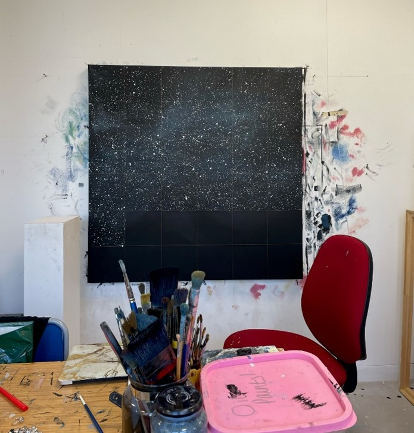
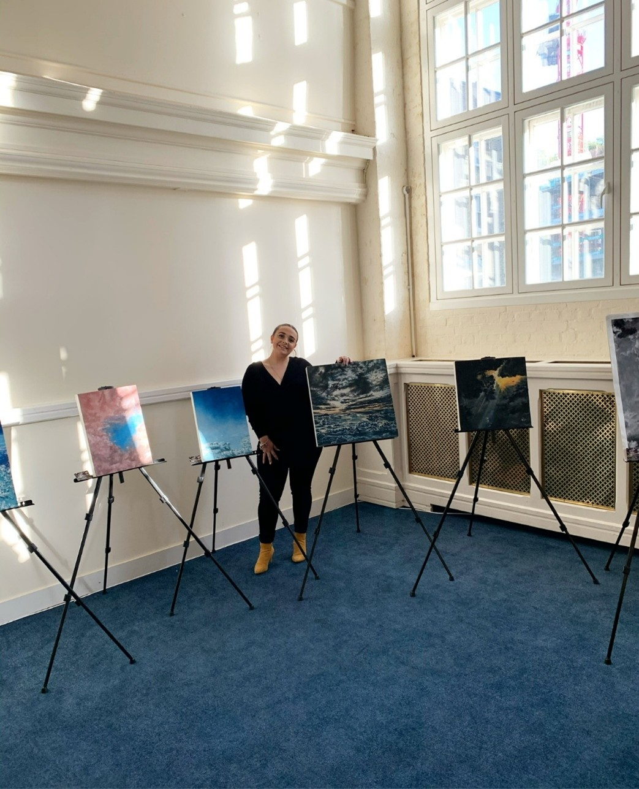

Inside The Studio

Samantha Ellis is a 28-year-old landscape artist based in the serene countryside of Northamptonshire. Holding a Bachelor of Arts in Painting and Drawing and a Master of Fine Art from the University of Northampton, Samantha has dedicated her life to exploring the language of the skies through oil paints. Her work draws from weather patterns, star charts, and cosmic data, capturing the vastness of the universe while grounding it in moments of profound human experience.

"The sky remembers every act of courage art helps us listen." This belief shapes her approach to painting. For Samantha, the skies are not just a subject — they are a witness. Each brushstroke becomes a conversation between earth and cosmos, history and hope.
At 22, Samantha began to see the world not just for its beauty, but also for its fractures: the injustices, inequalities, and the weight of human-made crises. As a woman, she could no longer remain silent in the face of sexism, racism, homophobia, transphobia, and the systemic injustices surrounding us. As a white woman, she understood the responsibility that privilege carries to speak, to act, and to create work that challenges and inspires change.

During her Master’s degree, Samantha delved into themes of existentialism and displacement, weaving them into her artistic voice. Her paintings began to reflect not only the grandeur of the cosmos but also its quiet, unchanging presence over humanity’s defining moments — both beautiful and heartbreaking.
Climate change further shaped her artistic journey. Confronted daily with the fragility of our planet and humanity’s role in its decline, she began using her art as both a lament and a call to action. Painting became not only a response but a promise to bear witness, to spark dialogue, and to make a difference through beauty and truth.
View Her Works